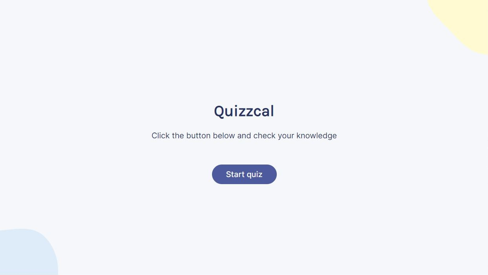

Project overview
This project features a quiz that generates questions and answers using the Fetch API.
Users are presented with five questions, with a choice of multiple-choice or true/false answers.
After selecting all the answers, users can verify their correctness by clicking the 'Check answers' button.
If they choose to play again, the quiz will load a new set of questions.
I developed this project during the Learn React course on the Scrimba platform.
For this assignment, only a Figma design template was provided,
along with the teacher's explanation of the desired website functionality, which I then implemented.
Technologies used
- React
- JavaScript
- HTML
- CSS
- Responsive design
Key features
Users are presented with five questions, each accompanied by corresponding answer options,
which can be either multiple-choice or true/false.

Once users have selected answers for all the questions, the 'Check answers' button becomes enabled.
Clicking this button highlights correct answers with a green background, while incorrect answers selected by the user turn red,
and the remaining options shift to a lighter color.
A summary of the user's correct answers is displayed at the bottom of the questions container, alongside a 'Play again' button.
Clicking 'Play again' button fetches a new set of questions and answers.
The website employs responsive design principles, ensuring an optimal user experience across various screen sizes and devices.
Challenges and solutions
During the development process, I encountered several challenges, including managing the quiz state,
enabling the "Check answers" button, creating a dynamic quiz, and displaying fetched content accurately.
-
To manage the quiz state effectively, I utilized React's useState and useEffect hooks.
This allowed me to fetch questions and answers using the Fetch API and store them as objects in the 'questions' state.
To track the user's selected answers, I updated the 'usersAnswer' key in the corresponding question object.
This approach ensured the correct and incorrect answers were displayed upon checking.
-
To enable the 'Check answers' button only when all questions had been answered,
I created an additional useEffect hook to monitor the "questions" state and update the 'disabledBtn' state accordingly.
Once the user selects an answer, the 'selected' key value in the corresponding question object is changed to true.
This state controlled the button's disabled attribute and contributed to a smooth user experience.
-
For a dynamic quiz experience, I implemented the 'shuffleAnswers' function that randomized the order of answer options for each question.
This ensured a unique quiz experience for users each time they played.
-
To display fetched questions and answers correctly on the user interface,
I used the 'html-entities' library to decode them, converting HTML entities to their respective characters.
Learning outcomes
Through this project, I have gained valuable experience and honed various skills:
- Proficiency in React: Utilizing core React features, including 'useState' and 'useEffect' hooks, to effectively manage application state and develop dynamic user interfaces.
- Data fetching and integration: Demonstrating the ability to fetch data from external APIs using the Fetch API and seamlessly integrating it into a React application.
- Custom function implementation: Successfully developing custom functions, such as the 'shuffleAnswers' function, to create unique and dynamic quiz experiences for users.
- Third-party library utilization: Skilled in employing third-party libraries like 'nanoid' for unique ID generation and 'html-entities' for decoding fetched content, enhancing both application functionality and user experience.
- Custom reusable components: Creating reusable components, like the 'Question' component, to maintain a modular and easily maintainable codebase.
- Conditional rendering and inline styling: Applying conditional rendering and inline styles in React to manage component appearance and offer real-time user feedback based on their interactions.
- Event handling and callback functions: Demonstrating effective use of event listeners and callback functions to manage user interactions and update application state as needed.
Project source code:
Github